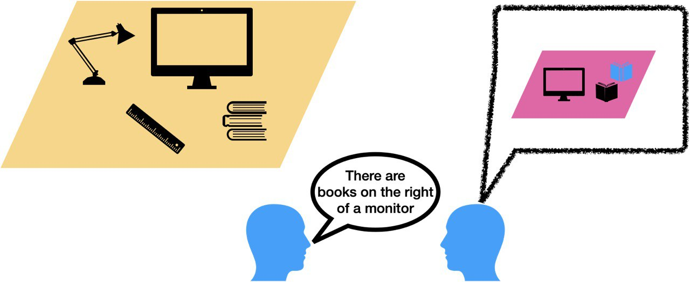

Motivation
Modern multimodal systems convert images into discrete token sequences consumed by transformer-based architectures. This interface enables scalable training, compression, and unified reasoning over visual and textual inputs, making image tokenization a central problem in representation learning.
While recent work has renewed interest in 1D discrete bottlenecks, many approaches still optimize for compression-reconstruction trade-offs. Tokens often entangle semantics and fail to localize objects, limiting downstream performance on compositional and relational tasks.
We shift focus from compression to semantic organization of token sequences. Alignment losses help, but structure also requires an encoding process that encourages compositionality.

Our approach is inspired by how humans describe visual scenes under limited bandwidth: attention moves region-by-region, integrating salient information into a message and reducing uncertainty progressively. This naturally prioritizes high-level entities and relations over fine detail, creating a coarse-to-fine hierarchy.
COMiT follows this intuition via attentive sequential tokenization and homogeneous communication within a single model that both encodes and decodes.